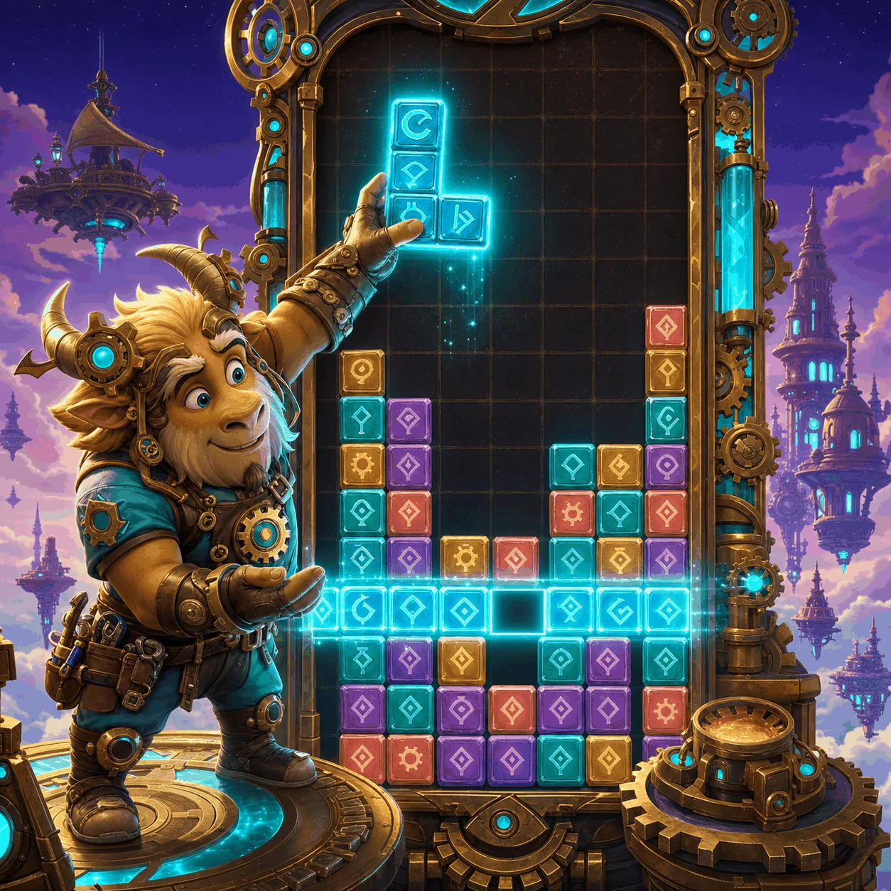

Settings

Use visible controls to play a complete falling-block run, then review the Result.
ObjectiveKeep the stack low and clear horizontal lines.

Use visible controls to play a complete falling-block run, then review the Result.
A complete falling-block puzzle with real line clears, rising speed, and a natural top-out.
Fill complete horizontal rows while pieces fall automatically. Use Left, Rotate, Right, Soft drop, and Hard drop to keep the stack low. The landing outline shows where the active piece will settle, and every ten cleared lines raises the level and accelerates gravity.
Read the next-piece preview, rotate before committing to a gap, and choose a legal landing that keeps future columns open. The run continues until the stack blocks the top; then review your score, play again, or return to the main screen.
Every 10 cleared lines raises the level and shortens the gravity interval. Clearing 1, 2, 3, or 4 rows awards 100, 300, 600, or 1,000 points multiplied by the current level.
The next-piece preview and landing outline make the board a readable planning problem: choose a legal landing now while keeping future columns open. The same run is playable with visible controls or keyboard commands.
Only the best score and sound preference are saved in this browser; the current board is not saved. The game runs without an account or purchase.